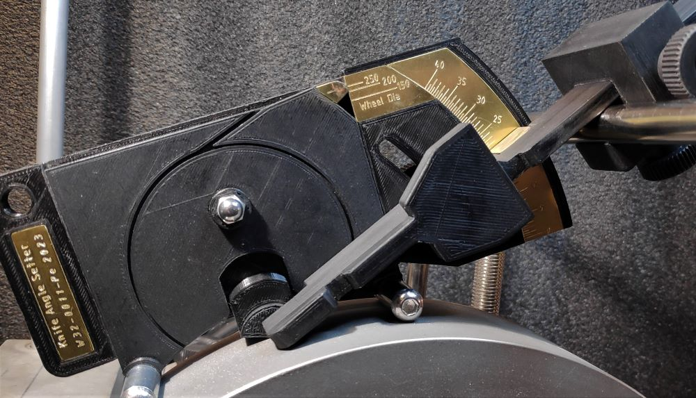

Overview

Knife Angle Setter
Note 1: This jig is designed for use with the KJ knife jigs.
Note 2: The Tormek KS-123 Knife Angle Setter also offers this functionality.
Per Ericson (Perra on the Tormek forum) posted a nicely manufactured device for easily setting the angle for sharpening knives. He graciously posted the instructions, and I am putting a link to them here.
This jig is really great as it allows for identifying the specific angle to be ground when using of the Tormek KJ-45 Centering Jig. This is significantly simpler than using the WM-200 AngleMaster.
Usage Notes
Steps for using this jig:
- Attach the knife to the KJ-45 Centering Jig.
- Set the grindstone's diameter on the Knife Angle Setter.
- Select the angle to be ground on the knife. Set this on the Knife Angle Setter. Note: this is in degrees per side (the bevel angle {β}, not the included angle {α}).
- Set the T-cube on the Knife Angle Setter so that it aligns to the knife's projection.
- Use the Knife Angle Setter to set the USB's height.